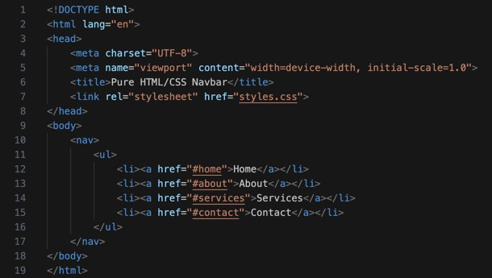
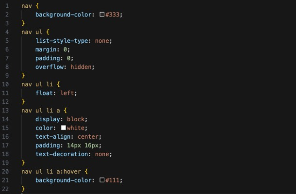
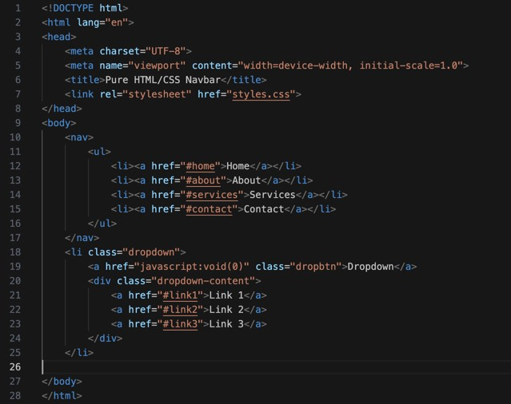
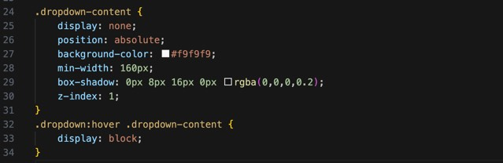
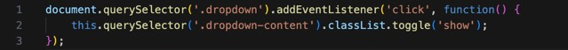
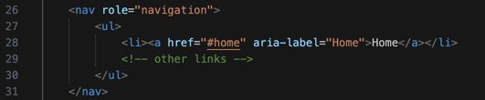

Welcome to our comprehensive guide on coding a navigation bar! Navigation bars are a fundamental part of web design, providing users with an intuitive way to explore your site. In this tutorial, we'll dive into the different types of navigation bars, their importance, and step-by-step instructions on creating them from scratch
A navigation bar, or navbar, is typically a collection of links guiding users to various sections of a website. Here’s the basic HTML structure for a simple navigation bar:

<nav> tag: Defines the navigation section.<ul> tag: Represents an unordered list of links.<li> tag: Each list item within the unordered list.<a>; tag: Anchor tags represent the actual links.This is how the navigation bar should look so far
Styling the navigation bar is crucial for making it visually appealing and user-friendly. Below is a basic CSS example to style the navbar:

background-color: Sets the background color of the navigation bar.list-style-type: Removes default list styling.overflow: hidden: Ensures the content stays within the navbar.float: left: Aligns the list items horizontally.text-align: center: Centers the text within each link.:hover: Changes the background color when the user hovers over a link.A responsive navigation bar adapts to different screen sizes, enhancing the user experience across devices. Media queries are used to achieve this:
@media screen and (max-width: 600px): Applies styles for screens 600px wide or smaller.float: none: Stacks the menu items vertically on smaller screens.Enhance your navigation bar with dropdown menus for a more interactive experience.
HTML for Dropdown
CSS for Dropdown

position: absolute: Positions the dropdown content absolutely within its container.list-style-type: Sets a minimum width for the dropdown content.overflow: hidden: Adds a shadow effect for depth.float: left: Displays the dropdown content when hovering over the dropdown button.For dynamic interaction, JavaScript can be used to toggle dropdown visibility on click:

querySelector: Selects the dropdown element.addEventListener: Adds an event listener for the 'click' event.classList.toggle: Toggles the 'show' class on the dropdown content.Accessibility is crucial for ensuring that your navigation bar is usable by everyone, including those with disabilities. Use ARIA roles and properties to enhance accessibility:

role="navigation: Defines the section as a navigation region.aria-label: Provides an accessible name for the link.Explore different styles of navigation bars and download ready-to-use templates to get started quickly:
Having trouble with your navigation bar? Here are solutions to common issues:
Having trouble with your navigation bar? Here are solutions to common issues:
In this guide, we’ve covered the essentials and advanced features of creating a navigation bar. By following these steps, you can build a user-friendly and visually appealing navbar for your website. Ready for more? Check out our next topic on building responsive layouts and further enhance your web design skills!